using GeoStatsImages
img = geostatsimage("Gaussian30x10")
img |> viewer
In Part II and Part III of the book, we learned two important tools for efficient geospatial data science. We learned how transform pipelines can be used to prepare geospatial data for investigation, and how geospatial queries can be used to answer geoscientific questions. Before we can learn our third tool, we need to review the important concept of geospatial correlation:
Given \(n\) pairs of measurements \(\{(x_1, y_1), (x_2, y_2), \ldots, (x_n, y_n)\}\) from variables \(X\) and \(Y\) that are \(h\) units of distance apart, we define geospatial correlation as the sample Pearson correlation coefficient:
\[ cor_{xy} = \frac{\sum_{i=1}^n (x_i - \bar{x}) (y_i - \bar{y})}{\sqrt{\sum_{i=1}^n (x_i - \bar{x})^2} \sqrt{\sum_{i=1}^n (y_i - \bar{y})^2}} \]
where \(\bar{x}\) and \(\bar{y}\) are the mean values.
Let’s consider the following synthetic image from the GeoStatsImages.jl module to illustrate the concept for different values of \(h\):
using GeoStatsImages
img = geostatsimage("Gaussian30x10")
img |> viewer
The hscatter plot can be used to visualize the scatter of pairs \(\{(x_1, y_1), (x_2, y_2), \ldots, (x_n, y_n)\}\) at a given lag \(h\). We can choose a variable \(X\) for the horizontal axis, a (possibly different) variable \(Y\) for the vertical axis, and the value of the lag \(h\). In order to reduce the computational costs associated with the plot, we will sample a subset of measurements from the image:
sample = img |> Sample(1000, replace=false)| Z | geometry |
|---|---|
| Continuous | Quadrangle |
| [NoUnits] | |
| 0.466552 | Quadrangle((26.0, 15.0), ..., (26.0, 16.0)) |
| -0.0673558 | Quadrangle((43.0, 41.0), ..., (43.0, 42.0)) |
| -0.688971 | Quadrangle((92.0, 28.0), ..., (92.0, 29.0)) |
| -0.687602 | Quadrangle((0.0, 89.0), ..., (0.0, 90.0)) |
| -1.52311 | Quadrangle((72.0, 22.0), ..., (72.0, 23.0)) |
| 0.0409255 | Quadrangle((81.0, 74.0), ..., (81.0, 75.0)) |
| 0.279239 | Quadrangle((29.0, 1.0), ..., (29.0, 2.0)) |
| 0.942194 | Quadrangle((52.0, 36.0), ..., (52.0, 37.0)) |
| 1.18225 | Quadrangle((93.0, 11.0), ..., (93.0, 12.0)) |
| 0.01878 | Quadrangle((12.0, 76.0), ..., (12.0, 77.0)) |
| ⋮ | ⋮ |
If we plot the values of the variable Z in the horizontal axis and the values of the same variable measured at lag \(h=0\) on the vertical axis, we get points along the identity line (i.e. no scatter):
hscatter(sample, :Z, :Z, lag=0.0)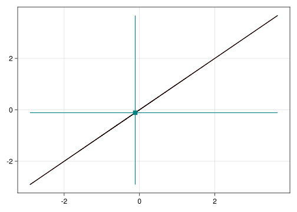
By increasing the value of the lag, we observe that the correlation is no longer equal to one, and that the linear fit through the points approaches the horizontal axis (i.e., zero correlation):
hscatter(sample, :Z, :Z, lag=3.0)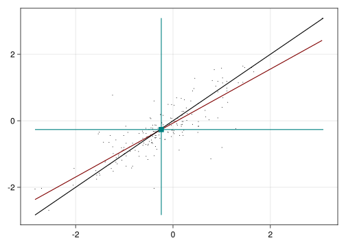
hscatter(sample, :Z, :Z, lag=5.0)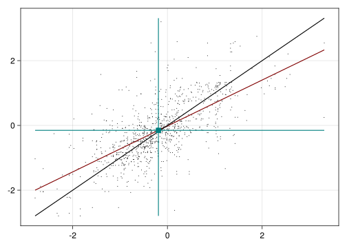
hscatter(sample, :Z, :Z, lag=10.0)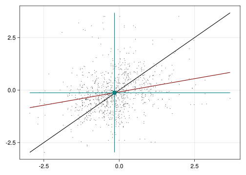
hscatter(sample, :Z, :Z, lag=50.0)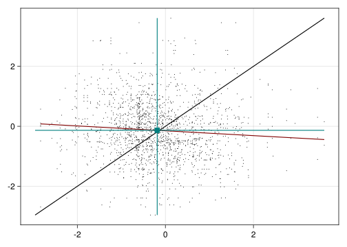
The sample Pearson correlation coefficient studied as a function of the lag \(h\) is known as the correlogram function. For example, consider the exponential correlogram function given by \(cor(h) = \exp(-h)\):
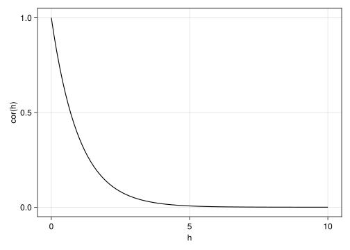
The terms auto-correlogram (\(X = Y\)) and cross-correlogram (\(X \ne Y\)) are also encountered in the literature to differentiate the various geospatial correlations in the multivariate case. Similarly, the terms auto-covariance and cross-covariance are encountered by replacing the correlation by the covariance (non-normalized correlation).
Even though the correlogram function is widely used in other scientific fields, we will review an alternative statistic of association that is most useful in geospatial data science.
The variogram function is a more general alternative to the correlogram and covariance functions that does not rely on the mean values \(\bar{x}\) and \(\bar{y}\). It is given by
\[ \gamma_x(h) \approx \frac{1}{2|N(h)|}\sum_{N(h)}(x_i-x_j)^2 \]
where \(N(h) = \Big\{(i,j): i\underbrace{\longrightarrow}_{h \text{ units}} j\Big\}\) is the set of pairs of locations that are \(h\) units apart.
In the multivariate case, we can also define the cross-variogram:
\[ \gamma_{xy}(h) \approx \frac{1}{2|N(h)|}\sum_{N(h)}(x_i-x_j)(y_i-y_j) \]
The value \(\gamma(h)\) measures the “spread” of the hscatter plot. Usually, at \(h=0\) there is no spread, and hence \(\gamma(0) = 0\). In most practical cases \(\gamma(h) \to \sigma^2\) as \(h \to \infty\) where \(\sigma^2\) is the maximum variance of the process. When this maximum variance exists, we can write the following relation:
\[ \gamma(h) = \sigma^2 - cov(h) \]
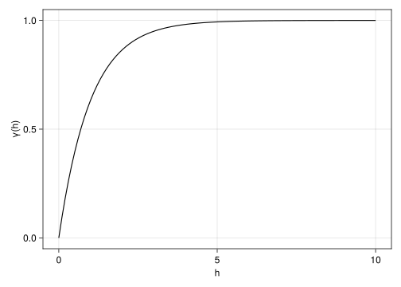
where \(cov(h)\) is the covariance function, a version of the correlogram function that is scaled by the standard deviations of X and Y:
\[ cor(h) = \frac{cov(h)}{\sigma_x \sigma_y} \]
Explaining why the variogram is more general than the covariance is out of scope for this book, but it has to do with the fact that variograms operate on the “difference process” \((x_i - x_j)\) as opposed to the centered process \((x_i - \bar{x})\). In particular, it does not require a finite maximum variance \(\sigma^2\).
The theory of intrinsic random functions of order k (IRF-k) is an advanced concept from geostatistical theory that explains the generality of the variogram function (Chilès and Delfiner 2012).
Our main goal here is to gain intuition about the variogram function for interpolation purposes. It suffices to learn its four basic elements: range, sill, nugget and model.
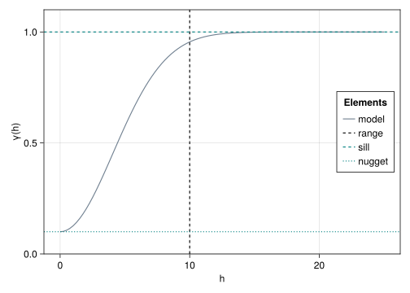
The range (a.k.a. correlation length) of the variogram determines the average size of “blobs” in the image. Let’s consider two synthetic images with ranges 10 and 30, respectively:
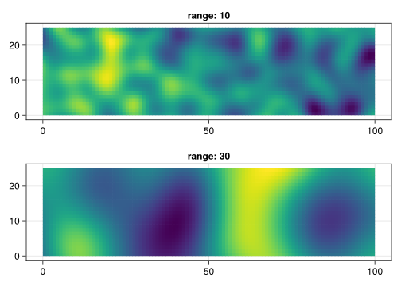
In the first image, we can clearly visualize the average size of yellow and blue blobs around 10 pixels (i.e. quadrangles). In the second image, the blobs have an average size of 30 pixels, which is greater than one of the sides of the grid (100x25 pixels).
To understand the sill of the variogram, let’s consider a 1D grid as our domain, and let’s represent the values of the variable with height instead of color:
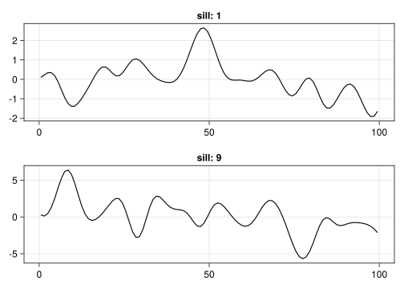
The sill determines the maximum variance of the process. If the sill is \(\sigma^2\), then a process with mean \(\mu\) will oscillate within \(\mu\pm3\sigma\) with 99.7% probability. The vertical amplitude in the second plot is (3x) larger than that of the first plot. In both plots, we have \(\mu=0\).
The nugget can be used to insert additional variance at scales that are smaller than the scale of measurements (i.e. pixel). It is known in the image processing literature as salt-and-pepper noise:
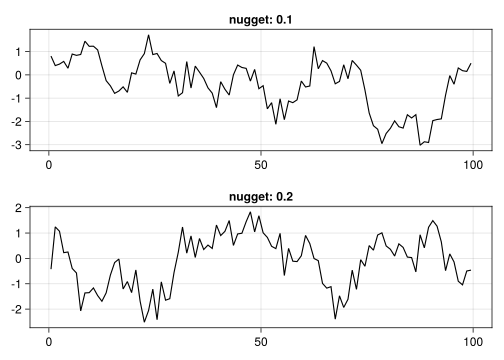
We can visualize the nugget effect in our 2D grid with colors as before:
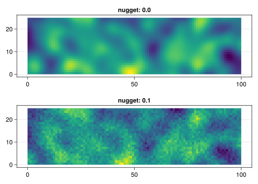
The name “nugget” comes from gold nuggets in mining geostatistics. These are often much smaller than selective mining units (SMUs), and show as bright values in the 3D model of the mineral deposit.
Finally, the model of the variogram determines how the function increases near the origin. The GeoStats.jl framework provides dozens of such models of geospatial correlation. The most widely used are the GaussianVariogram, the SphericalVariogram and the ExponentialVariogram:
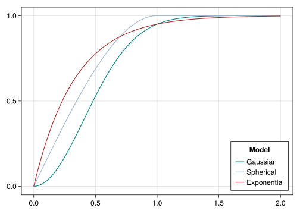
The faster is the increase of the function near the origin, the more “erratic” is the process:

All the four elements of the variogram function can be easily set at construction time:
γ = GaussianVariogram(range=10.0, sill=2.0, nugget=0.1)GaussianVariogram
└─sill: 2.0
└─nugget: 0.1
└─range: 10.0
└─metric: EuclideanAnd queried later with the corresponding functions:
range(γ), sill(γ), nugget(γ)(10.0, 2.0, 0.1)We can evaluate the variogram at any given lag:
γ(1.0)0.15615445670336806Or evaluate the variogram between any two points:
γ(Point(0, 0), Point(1, 0))0.15615445670336806In this case, the Euclidean metric is used by default to compute the lag. More generally, we can evaluate the variogram between any two geometries:
γ(Point(0, 0), Triangle((0, 0), (1, 0), (1, 1)))0.1370712764063879The evaluation of the variogram function between two geometries is known as variogram regularization, and implemented in terms of numerical integration.
Remind that the variogram value \(\gamma(h)\) is a measure of spread in the hscatter plot. It tells how much variation is expected for a variable at a distance \(h\) from a reference point.
Given geospatial data, how do we fit an appropriate variogram model for it? This practical question is traditionally answered in two steps as follows.
Let’s recap the synthetic image from the beginning of the chapter:
img |> viewer
We can use the EmpiricalVariogram to estimate the function at specific lag values:
g = EmpiricalVariogram(img, :Z, maxlag = 50.0)EmpiricalVariogram
abscissa: (1.7738343760403918, 48.73607108504686)
ordinate: (0.050208707452342134, 0.9030972117970858)
N° pairs: 24138788Mke.plot(g)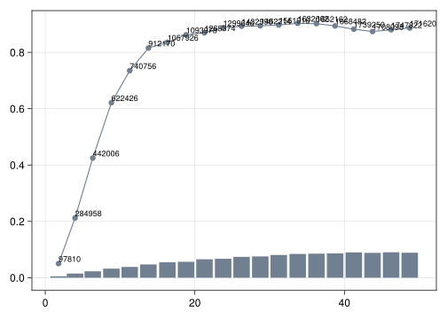
The numbers and bars in the empirical variogram plot represent the number of pairs used to estimate the value of the variogram at the corresponding bin. The larger the number, the more confident we can be in the estimate.
The DirectionalVariogram can be used to estimate the function along specific directions:
gₕ = DirectionalVariogram((1.0, 0.0), img, :Z, maxlag = 50.0)
gᵥ = DirectionalVariogram((0.0, 1.0), img, :Z, maxlag = 50.0)
Mke.plot(gₕ, hshow = false, vcolor = "maroon")
Mke.plot!(gᵥ, hshow = false, vcolor = "slategray")
Mke.current_figure()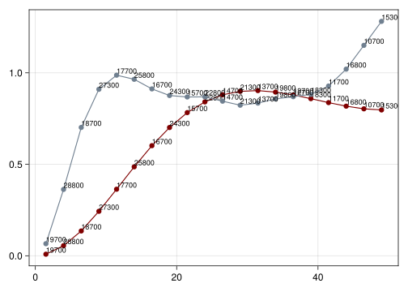
In this example, we observe that the blobs are elongated with a horizontal range of 30 pixels and a vertical range of 10 pixels. This is known as geometric anisotropy.
We can also estimate the variogram in all directions on a plane with the EmpiricalVarioplane:
gₚ = EmpiricalVarioplane(img, :Z, maxlag = 50.0)EmpiricalVarioplane
N° pairs
└─0.00° → 372500
└─3.67° → 304782
└─7.35° → 298306
└─11.02° → 297432
└─14.69° → 297243
⋮
└─165.31° → 293643
└─168.98° → 295850
└─172.65° → 296931
└─176.33° → 306528
└─180.00° → 372500The varioplane is usually plotted on a polar axis to highlight the different ranges as a function of the polar angle. These ranges are illustrated with a solid curve over the heatmap:
fig = Mke.Figure()
ax = Mke.PolarAxis(fig[1,1])
Mke.plot!(ax, gₚ)
fig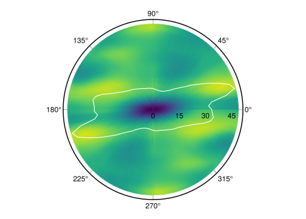
After empirical variogram estimation, the next step consists of fitting a theoretical model. This step is necessary for interpolation given that we need to be able to evaluate the variogram function at any lag \(h\), not just the specific lags of the empirical variogram.
Another reason to fit theoretical models is to ensure that variances of linear combinations of variables are always non-negative as discussed in Myers (1992).
To fit a specific theoretical model, we can use the fit function with the model as the first argument:
fit(SphericalVariogram, g)SphericalVariogram
└─sill: 0.8863386213342846
└─nugget: 6.484924860169837e-11
└─range: 18.350599790889927
└─metric: EuclideanWe can also let the framework select the model with minimum weighted least-squares error by passing the generic Variogram model to the function:
γ = fit(Variogram, g)GaussianVariogram
└─sill: 0.8864324257941406
└─nugget: 0.062356834376029395
└─range: 14.888520805892924
└─metric: EuclideanThis chapter is definitely one of the most challenging ones for those with little background in geostatistics. Let’s make a few important remarks to summarize what we learned:
hscatter plot.EmpiricalVariogram, and then we fit a theoretical model. The most widely used models are the GaussianVariogram, the SphericalVariogram and the ExponentialVariogram.In the next chapter, we will learn how to perform geospatial interpolation with the selected theoretical variogram model.